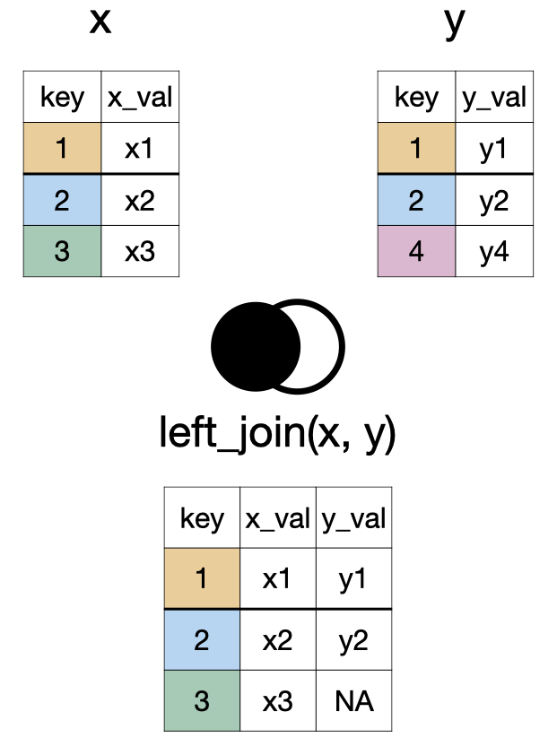
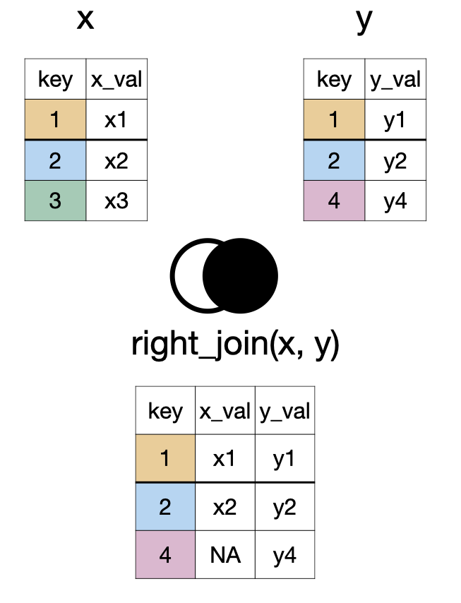
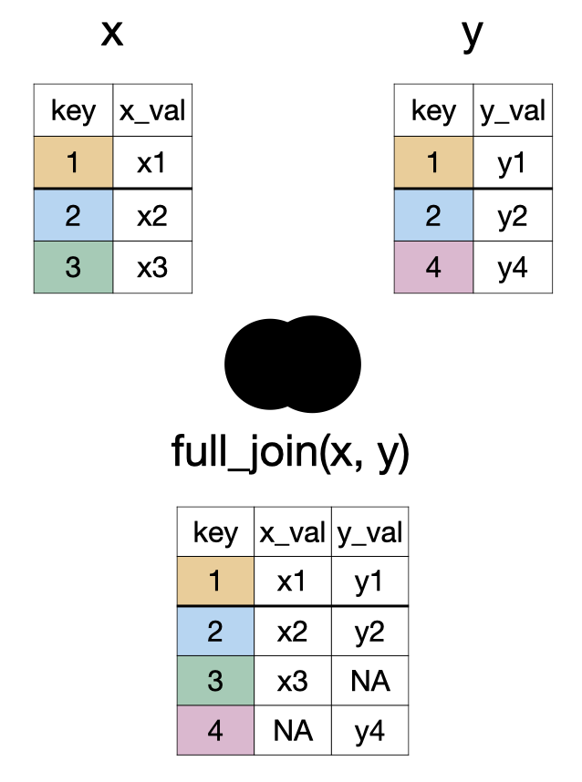
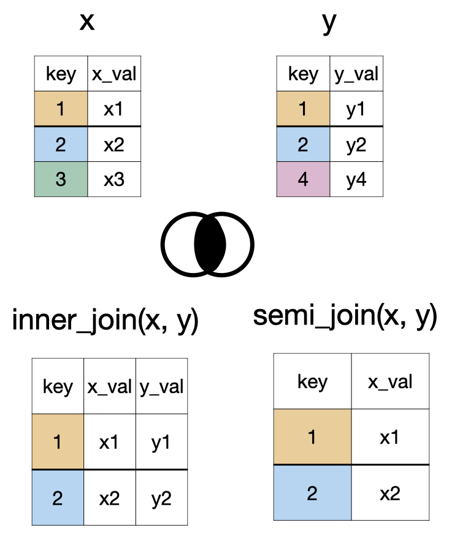
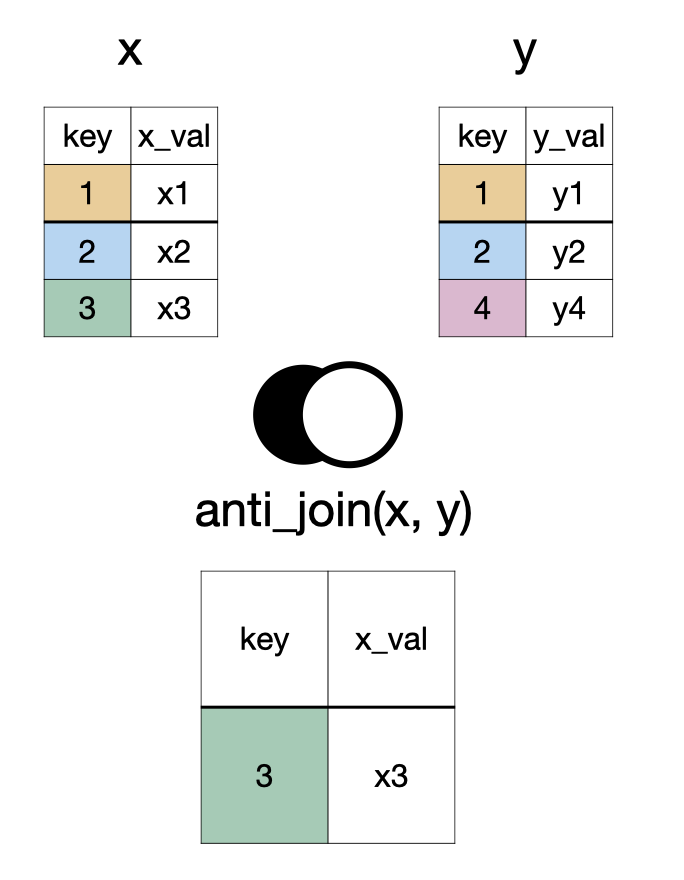

Rows: 14,824
Columns: 4
$ job_class_title <fct> Police Detective II, Police Sergeant I, Police Lieuten…
$ employment_type <fct> Full Time, Full Time, Full Time, Full Time, Full Time,…
$ base_pay <dbl> 119321.60, 113270.70, 148116.00, 78676.87, 109373.63, …
$ base_pay_level <chr> "Greater than 100K", "Greater than 100K", "Greater tha…Data Wrangling
Part II
Dr. Mine Dogucu
Data
Review of Aggregating Data
Data
Observations
Aggregate Data
Summaries of observations
Aggregating Categorical Data
Categorical data are summarized with counts or proportions.
# A tibble: 3 × 2
employment_type n
<fct> <int>
1 Full Time 14664
2 Part Time 132
3 Per Event 28Aggregating Numerical Data
Mean, median, standard deviation, variance, and quartiles are some of the numerical summaries of numerical variables. Recall
Aggregating Data By Groups
group_by()

group_by() separates the data frame by the groups. Any action following group_by() will be completed for each group separately.
Q. What is the median salary for each employment type?
# A tibble: 14,824 × 4
# Groups: employment_type [3]
job_class_title employment_type base_pay base_pay_level
<fct> <fct> <dbl> <chr>
1 Police Detective II Full Time 119322. Greater than 100K
2 Police Sergeant I Full Time 113271. Greater than 100K
3 Police Lieutenant II Full Time 148116 Greater than 100K
4 Police Service Representative II Full Time 78677. Between 0 and 100K
5 Police Officer III Full Time 109374. Greater than 100K
6 Police Officer II Full Time 95002. Between 0 and 100K
7 Police Officer II Full Time 95379. Between 0 and 100K
8 Police Officer II Full Time 95388. Between 0 and 100K
9 Equipment Mechanic Full Time 80496 Between 0 and 100K
10 Detention Officer Full Time 69640 Between 0 and 100K
# ℹ 14,814 more rowsNote that when group_by() is used there have been no changes to the number of columns or rows. The only difference we can observe is now Groups: employment_type[3] is displayed indicating the data frame (i.e., tibble) is divided into three groups.
We can also remind ourselves how many staff members there were in each group.
# A tibble: 3 × 3
employment_type med_base_pay count
<fct> <dbl> <int>
1 Full Time 97996. 14664
2 Part Time 14474. 132
3 Per Event 4275 28Note that n() does not take any arguments.
Data Joins
left_join(x, y)
right_join(x, y)
full_join(x, y)
inner_join(x, y) and semi_join(x, y)
anti_join(x, y)
something_join(x, y)
| x | y | |||
|---|---|---|---|---|
| rows | columns | rows | columns | |
left_join()
|
all | all | matched | all |
right_join()
|
matched | all | all | all |
full_join()
|
all | all | all | all |
inner_join()
|
matched | all | matched | all |
semi_join()
|
matched | all | none | none |
anti_join()
|
unmatched | all | none | none |
# A tibble: 5 × 4
name song_name album_name song_popularity
<chr> <chr> <chr> <dbl>
1 Beyoncé Savage Remix (feat. Beyoncé) Savage Rem… 83
2 Taylor Swift cardigan folklore 85
3 Drake Laugh Now Cry Later (feat. Lil Durk) Laugh Now … 95
4 Beyoncé Halo I AM…SASHA… NA
5 Ariana Grande Stuck with U (with Justin Bieber) Stuck with… NA# A tibble: 5 × 5
name song_name album_name song_popularity followers
<chr> <chr> <chr> <dbl> <dbl>
1 Beyoncé Savage Remix (feat. Beyonc… Savage Re… 83 24757958
2 Taylor Swift cardigan folklore 85 33098116
3 Drake Laugh Now Cry Later (feat.… Laugh Now… 95 NA
4 Beyoncé Halo I AM…SASH… NA 24757958
5 Ariana Grande Stuck with U (with Justin … Stuck wit… NA 51807131# A tibble: 4 × 5
name song_name album_name song_popularity followers
<chr> <chr> <chr> <dbl> <dbl>
1 Beyoncé Savage Remix (feat. Beyonc… Savage Re… 83 24757958
2 Taylor Swift cardigan folklore 85 33098116
3 Beyoncé Halo I AM…SASH… NA 24757958
4 Ariana Grande Stuck with U (with Justin … Stuck wit… NA 51807131# A tibble: 5 × 5
name song_name album_name song_popularity followers
<chr> <chr> <chr> <dbl> <dbl>
1 Beyoncé Savage Remix (feat. Beyonc… Savage Re… 83 24757958
2 Taylor Swift cardigan folklore 85 33098116
3 Drake Laugh Now Cry Later (feat.… Laugh Now… 95 NA
4 Beyoncé Halo I AM…SASH… NA 24757958
5 Ariana Grande Stuck with U (with Justin … Stuck wit… NA 51807131# A tibble: 5 × 6
name song_name album_name song_popularity followers album_release_date
<chr> <chr> <chr> <dbl> <dbl> <date>
1 Beyoncé Savage R… Savage Re… 83 24757958 2020-04-29
2 Taylor Swift cardigan folklore 85 33098116 NA
3 Drake Laugh No… Laugh Now… 95 NA 2020-08-14
4 Beyoncé Halo I AM…SASH… NA 24757958 2008-11-14
5 Ariana Gran… Stuck wi… Stuck wit… NA 51807131 2020-05-08 Complete the questions provided to you in the lecture notes.
Learning Tip of the Day
Reappraising test anxiety increases academic performance of first-year college students